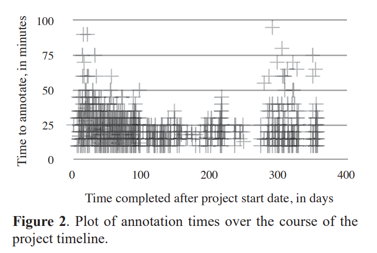

SALAMI数据集，最早被我注意到是在2018年的ISMIR上的《INTERACTIVE ARRANGEMENT OF CHORDS AND MELODIES BASED ON A TREE-STRUCTURED GENERATIVE MODEL》，里面使用了来自McGill University的SALAMI数据集。
这个数据集的特点是，人工标注了音乐的层次结构。从规模上来说，涵盖了一千余首音乐，足以充当模型的测试集，用于检查模型对音乐层级结构的推导准确性。
这篇文章主要是数据集公开时发表的论文《DESIGN AND CREATION OF A LARGE-SCALE DATABASE OF STRUCTURAL ANNOTATIONS》的全文翻译，附带了我使用这个数据集的一些心得体会。
摘要
本文描述了一个前所未有的大型数据库的设计和创建，该数据库包含近1400种音乐录音的2400多种结构注释。该数据库旨在成为算法的测试集，用于分析数十万个记录的更大的语料库，作为大量音乐信息结构分析（SALAMI）项目的一部分。本文描述了数据库的设计目标以及在创建过程中遇到的实际问题。
特别是，我们讨论了录音的选择，注释格式的开发和适应Peeters和Deruty [10]的工作的程序，以及项目的管理和执行。我们还总结了所得到的注释语料库的一些属性，包括平均了标注者之间的一致。
Introduction
大量音乐信息（SALAMI）项目的结构分析是一项音乐学活动，其目标是为大量音乐制作结构分析 - 超过300,000个录音。这里的结构是指将一段音乐划分为多个部分，并将相似或重复的部分组合在一起。这些部分通常对应于功能独立的部分，例如流行歌曲的“诗歌（verse）”和“合唱（chorus）”部分，奏鸣曲的“呈示部（exposition）”和“展开部（development）” - 或者在更短的时间尺度，呈示部的“主题”，“转型”和次要主题”群体。
SALAMI语料库中的录音代表了各种类型，从klezmer到40强流行音乐，以及各种来源，包括专业录音室录音和观众录制的现场会议。SALAMI数据集将免费提供，可以为音乐理论家，音乐学家和其他音乐研究人员提供很好的服务，因为确定单个音乐片段的形式通常是一项耗时的任务。SALAMI数据集可以促进形式的大规模研究，目前这种研究相对不常见。
由于了解音乐片段结构的价值，追求自动生成结构描述的算法是一个活跃的研究领域。（有关评论，请参阅[9]。）SALAMI项目计划使用这些算法中的一些来分析其数十万个记录。但是，在使用这些算法之前，有必要在所代表的大量类型上验证它们的性能。这需要创建一个人类注释的地面实况数据集。设计和创建大型数据库（如SALAMI测试集）引发了许多与音乐选择，注释格式和过程相关的方法问题。本文解释了所涉及的问题以及我们为解决这些问题所做的决定。
本文的下一部分总结了几个现有结构注释语料库的内容和贡献，以及最近对注释过程本身的重要研究[1,10]。第3节描述了SALAMI测试集的创建，包括语料库选择，使用的注释格式和推荐的工作流程。第4节介绍并讨论了结果数据集的一些属性。
之前的工作
既有的数据
SALAMI需要一个包含大量流行音乐，爵士乐，古典音乐和世界音乐的数据库。然而，大多数以前的注释集合只考虑流行音乐。现有最大的三个注释数据库是TUTstructure07 [13]（557个注释），由坦佩尔理工大学（TUT）编制，主要包含流行音乐;由Alan Pollack创建并由两组独立同步的Beat les工作室目录的注释[5,14]（180注释）;和RWC音乐数据库（285注释）附带的AIST注释集[4]。RWC套装大约是一半流行音乐，每个爵士乐和古典音乐四分之一，还有少数世界音乐作品，但对于许多爵士乐和古典乐曲，只有“合唱”部分。
注释格式
几乎所有以前的注释语料库都使用了相同的直接注释格式。片段被分割成非重叠的片段，并且每个片段被给予单个标签，例如“前奏”或“合唱”，以指示哪些片段彼此相似或重复。标签还表明每个部分的音乐角色或功能。在一些语料库中，例如披头士乐队的注释[5]，标签可以指示乐器（例如，“verse_guitar”）或乐段的变体（例如，“verse_with_ending”）。
存在的问题
正如Peeters和Deruty [10]所指出的，音乐相似性，功能和仪器的这种混合是有问题的。例如，歌曲的“outro”可以使用与之前的“transition”相同的音乐，但是将它们标记为未能记录它们的相似性。相反，具有单一功能的部分可能在音乐上是异质的，如同延伸的两部分介绍一样。Peeters和Deruty还批评了在某些注释集合中使用的大型，看似无约束的词汇表。再次考虑Isophonics Beatles注释[5]：在146个独特标签中，95种只使用一次。一次性标签可以为检查注释的人提供信息，其中其含义在上下文中是可理解的（例如，“introredux”，“verse（slow）”），但是当注释正在进行时，具有太多唯一标签的用处不大 由机器使用。标准注释格式的另一个缺点是它仅描述单个时间尺度的结构。音乐结构最重要的属性之一是它被层次感知，并且理想的是在注释中捕获一些这样的信息。
一种可替代的格式
Peeters和Deruty提出了另一种注释格式，旨在解决这些问题。该格式使用了19个标签的受限词汇表，每个标签都涉及一个部分结构的三个方面之一：音乐相似性，音乐角色或乐器角色。在它们的格式中，通过将一个片段的每个部分标记为五个“组成型实体循环”（CSLoops）之一来指示音乐相似性。（如果需要超过五个，则使用第六个CSLoop，但格式并不意味着标有此最后一个标签的所有部分都相似。）功能标签是可选的，仅限于“intro / outro”，“transition”， “chrous”和“solo”。乐器标签表示是否存在主要或支持旋律的声音。Peeters和Deruty的格式也创造性地包含了一些有关结构的分层信息。两个标记“V1”和“V2”划分CSLoops; 第一个表示标记两侧的音乐片段相似，第二个表示它们不相似。
标注过程
与音调不同，在很大程度上，节拍，结构的感知是一种高度主观的现象，并且两个听众通常不同意音乐的形式。因此，开发一种注释程序是一项挑战，虽然可能不是客观的，但最大限度地提高了结果的可重复性。请注意，由于结构分析记录了听众的创造性解释和她的感知，因此客观性可以说是注释的不可能的目标。
一种方法是将注释的创建视为感知实验，并且只要让多个主体听到一个片段并且只要他们感知到结构边界就按下按钮。这些数据是由[2]收集的，他们指出，听众普遍同意他们认为最突出的边界的位置。这些边界被作者用作一种“基础事实”，用于评估一些计算模型在估计边界时的成功。
Bimbot等[1]通过精确指定注释程序设法获得一定程度的可重复性。他们定义了注释器应该使用的音乐标准和相似性判断，以便估计边界。（标记细分的任务仍然是未来的工作。）他们报告说，通过他们的程序，注释在注释者和随着时间的推移是非常一致的。注释器的目标是将一个片段分解为“自主和可比较的块”。自主意味着无论一个块是独立还是连续循环，结果应该是音乐上可接受的。如果两个块在节拍中具有相同的持续时间，可互换，或者就其时间组织而言是相似的，则它们可以是可比较的。
SALAMI数据集的描述
我们使用独特的注释格式开发了一个新的注释语料库，以实现SALAMI项目的目标。为确保语料库可用作SALAMI的评估测试集，主要的设计考虑因素是语料库涵盖尽可能广泛的音乐类型。为了使注释在音乐上有用，注释格式的设计目标是独立描述音乐相似性，功能和主要乐器，并且注释反映音乐结构的等级性质。最后，格式和程序应该允许快速制作注释，以最大限度地降低成本，但要足够灵活，以便能够处理各种类型的作品，同时目标着标注者之间的一致。考虑到这些设计考虑因素，我们对以前的注释语料库和现有注释技术进行了调查。基于此调查以及我们自己对不同方法的实验，我们确定了本节中概述的语料库，格式和过程。
SALAMI数据集的内容
设计语料库的第一步是决定放入什么。SALAMI的优先事项之一是为尽可能多种音乐提供结构分析，以匹配算法分析的音乐的多样性。除了流行音乐之外，SALAMI测试装置应该同等重视古典，爵士和非西方音乐，俗称“世界”音乐。为确保录音格式的多样性，我们还强调了录制现场录音。数据库的最终组成如表1所示。
SALAMI测试集的第二个目标是能够将我们的注释与以前的数据集进行比较。因此，我们重复了之前的一些工作：我们的测试集目前分别包括来自RWC和Isophonics数据集的97和35个记录。注意，这些记录都是单键的（即，由单个人注释），而大多数SALAMI测试语料库是双键的（由两个独立的注释器分析）。双键提供有用的信息，但更昂贵。鉴于其他组已经注释了这些条目，单键输入一些条目似乎是一个合理的妥协。
手动选择语料库的歌曲会耗费时间，并会引入未知的方法论偏见。然而，从大多数来源随机选择歌曲会导致语料库严重偏向流行音乐。为了解决这个问题，大多数录音都来自Codaich [7]，这是一个包含精心策划的元数据的大型数据库，包括50多个子标签。这使我们能够在仍然随机选择单个作品的同时强制实现对流派的良好报道。测试集的其余部分是从Live Music Archive [6]中随机收集的。遗憾的是，这些录音的元数据不一致，无法按类型分发。大多数似乎是流行和爵士音乐。
标注格式
我们开发了一种新的注释格式，它采用Peeters和Deruty设计的格式，采用了许多重要的方式：我们借用它们之间的区别来区分表示音乐相似性，功能和仪器的标签，并且像我们一样，我们也严格限制功能标签的词汇量。但是，我们已经做了一些修改，以适应SALAMI的独特需求和更多的音乐学焦点。三层中的每一层中的标签在以下三个部分中描述。示例注释如图1所示。
音乐相似性轨
音乐相似性轨迹包括在不同时间尺度的两个层，每个时间尺度识别该部分的哪些部分使用类似的音乐想法。大型图层使用大写字母作为标签（“A”，“B”等），小型图层使用小写字母（“a”，“b”等）。字母标签的使用模仿了熟悉的音乐理论方法。必须为大型和小型图层中的每个记录部分分配一个字母标签。格式规范允许使用任意数量的小写或大写字母（如果字母表用尽，可以使用标签“aa”，“ab”等等）。然而，对于大规模层，指示注释器优选每次记录使用五个或更少的不同大写标签。该偏好规则并未表示在任何记录中存在五个或更少的不同音乐想法的假设。相反，它旨在引导注释器朝向某个抽象级别。当注释不太清晰地组织成不同部分的作品时，这个方向被证明是有用的，例如通过组合的部分。它也有助于注释作品，如奏鸣曲，可以组织成部分，但这些部分不是音乐上同质的，可能包括几个不同的音乐想法。
另外两个特殊标签表示沉默（“slience”）和非音乐，例如现场记录中的掌声或戏弄（“Z”）。我们还允许字母标记被素数符号（’）所反映，以表示与另一个明显相似的部分，但这被认为是实质上变化的。相似性判断本质上是主观的和不精确的，而主要符号是承认这一点的有用方式。它允许注释者忠实地记录他的解释，同时允许未来的用户根据他们的需要轻松地调整标签。例如，根据应用程序，用户可以删除主要标记（以便“a”和“a’”被重新标记为“a”）或将变体视为不同的部分（以便“a’”将是重新分配了与“a”不同的字母标签）。
功能轨
注释格式中的第二个轨道包含音乐功能标签，所有标签都必须从我们严格的20个标签词汇中提取。与字母标签不同，一件作品的每个部分都不一定要收到功能标签。词汇表列在表2中，分为各种相关类别。乐器，过渡和结束组都是同义词组。请注意，在结束组中，标签“fadeout”是除了任何其他标签之外还可以出现的特殊标签。例如，如果乐曲在重复合唱时淡出，则最后一部分可以同时给出两个标签：“合唱”和“淡出”。每个术语的完整定义在我们的注释器指南中指定，可在线获取[11]。
请注意，某些标签是其他类型的特定类型的替代品：例如，爵士乐歌曲中的“head”类似于流行歌曲中的“chorus”，或者有时候是古典乐曲中的“主题”。此外，术语“exposition”，“development”和“recapitulation”一起特定于奏鸣曲形式，并且在特殊情况下可用于在大于大规模相似性标签的时间尺度上注释第三级结构关系。然而，“development”也具有更广泛的适用性：它可以用于表示对比中间部分的功能，这在许多情况下是相关的，从各种古典类型到渐进式摇滚。另外，词汇表的一些子集可以用作同义词组，如果需要，可以将其折叠成单个功能标签。例如，虽然我们的Annotator’s Guide定义了“pre-chorus,” “pre-verse,” “interlude,”和 “transition” 部分之间相对微妙的区别，但它们都是“ “transition” 的同义词。这种方法允许注释者犯错在精确度方面，同时使未来的数据用户可以忽略不需要的区别。
领头乐器轨
注释格式中的最后一个轨道指示单个乐器或声音在哪个位置具有领先的，通常是旋律的角色。此轨道中的标签只是主要乐器的名称，因此词汇不受限制。此外，与其他轨道不同，主要乐器标签可能会重叠，如二重唱。请注意，与功能轨道一样，如果没有仪器满足主导作用，则可能存在没有主要仪器标签的记录部分。
请注意，在为此项目设计的书面格式中，描述小规模相似性片段的边界是注释函数和引导仪器轨迹时唯一可用的边界。同样，这有助于将注释器定位到适当的抽象级别，并减轻它们过于辛苦地指示仪器的变化。
标注过程
注释器使用软件Sonic Visualiser [3]来试听和注释碎片。Sonic Visualiser的键盘命令允许用户很快插入和标记边界。我们提出了以下工作流程：首先，每当感知到结构边界时，通过歌曲聆听并标记边界。其次，再次听取这个部分，调整边界并添加小写标签。第三，添加大写和功能标签，最后添加主要仪器标签。虽然我们发现此工作流程高效且简单，但我们并未要求注释者遵循此工作流程或任何其他特定工作流程。
项目实现
注释格式和数据收集在10个月的时间内进行。首先，研究了以前的注释格式和注释数据库。潜在的注释格式由项目负责人设计和测试，并在两个月结束时设定了一种暂定格式。接下来，候选注释器在注释格式和Sonic Visualiser环境中进行训练。聘请了八位成功的候选人，他们都在音乐理论或作曲中继续攻读研究生课程，并在接下来的一周开始收集数据。由于注释格式在工作开始之前尚未进行大规模测试，因此数据收集的前六周被视为延长试用期。每个星期或两个星期，新的流派都会给注释者一个新的作业，从流行开始，558第12届国际音乐信息检索学会（ISMIR 2011）预计将成为问题最少的，并继续按顺序进行爵士乐 ，古典和世界，预计难度越来越大。在六周结束时，放松了对注释者的监督，并且临时解决了任何问题。在接下来的12周内继续收集数据，此时大多数任务已经完成。我们收集了自我报告的时间，用于生成每个注释以评估生产率。时间被绘制为图2中前1700个注释的日期的函数。可以看出，在项目开始时忽略了一些异常值，注释时间从20分钟的模式中适度减少。前100天，其余时间为15分钟的模式，足以让3首完全听完普通歌曲，长度为4:21。平均注释时间也从21分钟下降到17分钟。早期的分析显示歌曲的长度与其注释时间之间略有相关性。

标注格式和过程修改
在每次新任务之后，我们征求注释者的反馈意见，了解注释格式和程序中的弱点或含糊之处。大多数问题在定期小组会议上得到解决和解决，我们也在那里计划并商定词汇量。
反馈导致引入新的启发式方法（例如，我们建立了一种偏好，即使在拾取器存在的情况下，分段边界也会下降。在一个案例中，反馈导致了格式的重大修订。我们最初使用[10]描述的“V1”和“V2”标记在较短的时间尺度上隐含地编码音乐相似性。
然而，注释者发现在两个时间尺度上明确地描述结构在概念上更简单和更快。切换器对注释器感到满意，随后的注释也有更多信息。
结果
在本节中，我们将报告所收集数据的某些属性，包括标注人员之间的一致协议。对于大规模分析，每个注释的平均段数为11.3，其中一半的分析具有8到14个段。对于小规模分析，这些数字为38.4，在20和49之间。平均而言，每个注释有4.0个独特的大型标签和7.2个独特的小型标签。从用于比较两个注释（在[12]中定义的）的各种度量中，我们估计了成对f-measure，边界f-measure和Rand指数。通过观察一组边界与另一组边界匹配的精度和召回来找到边界f-度量。如果边界位于彼此的某个容差窗口（0.5或3秒）内，则边界匹配。成对fmeasure将一个描述中具有相同标签的所有帧对视为一组相似关系，其他描述以一定的精度和回忆检索。Rand索引是类似的，除了它还标识在一个描述中具有不同标签的帧对在另一个中具有不同的标签。表3中报告了974对注释之间的协议。
每个注释都描述了两个细节层次的音乐相似度，两者都应被视为有效描述。为了比较两个注释，我们可以仅比较大尺度标签或仅比较小尺度标签，但我们也可以找到所有对的相似性（包括从小到大和从大到小）并取最大值 相似性来估计标注者之间的一致性。这将使我们能够识别注释者关注不同时间尺度的情况。如表3所示，大规模标签之间的一致性（成对f = 0.76，Rand= 0.79）与小规模标签之间的一致（成对f = 0.69，Rand= 0.81），并且找到的平均最佳匹配是 略高于每一个（成对f = 0.81，Rand= 0.87）。为了比较，[8]报告了来自TUT集的30首歌曲的测试集上的成对f为0.89，并且[1] 0 25 50 75 100 0 100 200 300 400注释时间，以分钟为单位在项目开始日期之后完成的时间。在20首歌曲的测试集上的边界f度为0.91（使用0.75秒阈值）。该协议未被发现在很大程度上取决于该类型。这是合理的，因为这里考虑的每个广泛的类型都非常多样化，包含一些简单和复杂的部分。例如，流行的流派包括直截了当的流行音乐和更难以注释的渐进摇滚; 同样，虽然很多世界音乐对注释者构成了挑战，但像克莱兹默和凯尔特音乐这样的子类可以在结构上直截了当。我们在RWC数据集中复制了97个记录的注释。RWC注释通过向函数标签添加字母（例如，“诗歌A”，“诗歌B”等）来区分相似且相同的部分重复。我们创建了两个版本的RWC标签，一个保留，一个忽略其他字母标签。将这些与大规模和小规模的SALAMI注释进行比较，显示出适度的一致性（见表4）。除Rand指数外，结果表明，大规模SALAMI分析与RWC注释比小规模分析更相似。
结论
SALAMI测试集有超过2400个注释，描述了近1400种音乐的正式结构，来自各种类型，包括流行音乐，爵士音乐，古典音乐和世界音乐。该组可用于未来的各种研究：例如，关于音乐的表面特征与音乐形式的感知之间的关系，或者正式风格与诸如艺术家，流派和原产地之类的音乐参数之间的关联。很快我们的网站就可以获得测试数据和数十万计算结构描述[11]。
虽然语料库的价值最终将取决于研究人员对其的使用，但SALAMI测试集中信息的数量和丰富程度应该使其对音乐学家和音乐信息检索研究人员都具有吸引力。